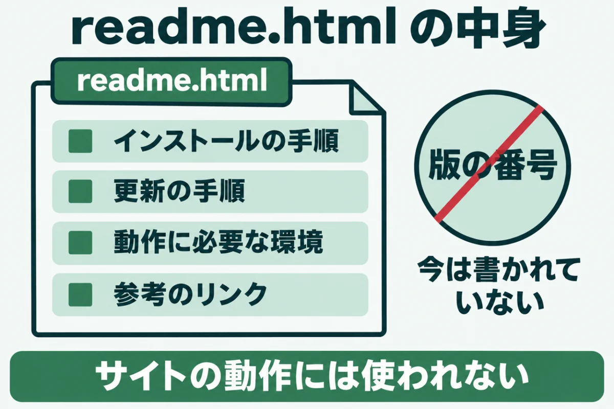
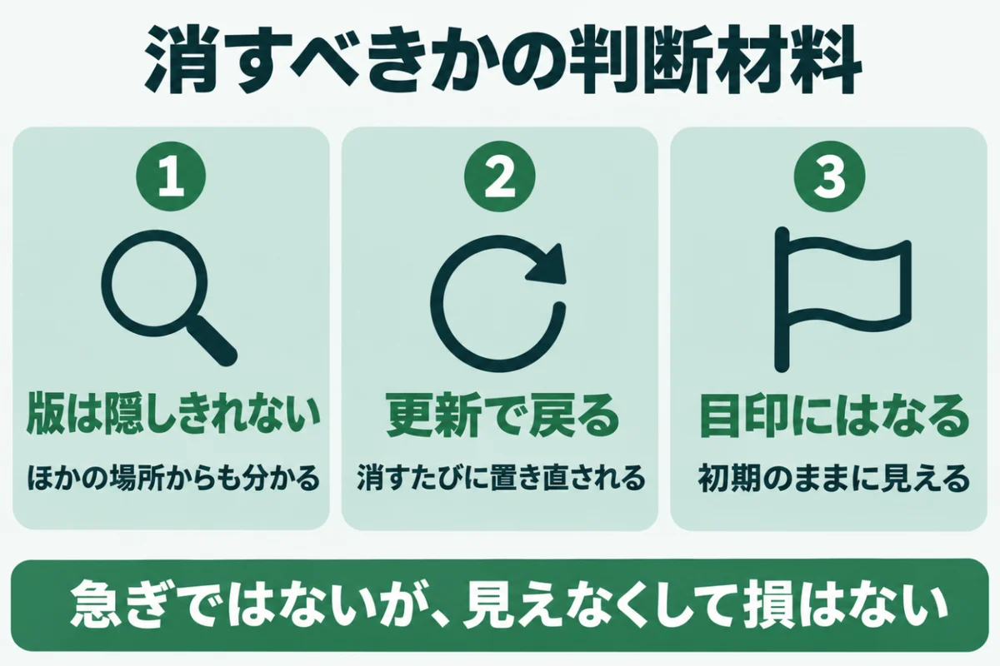
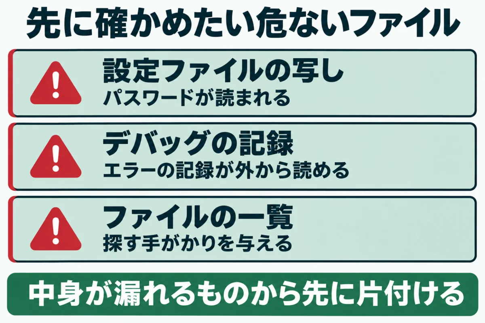
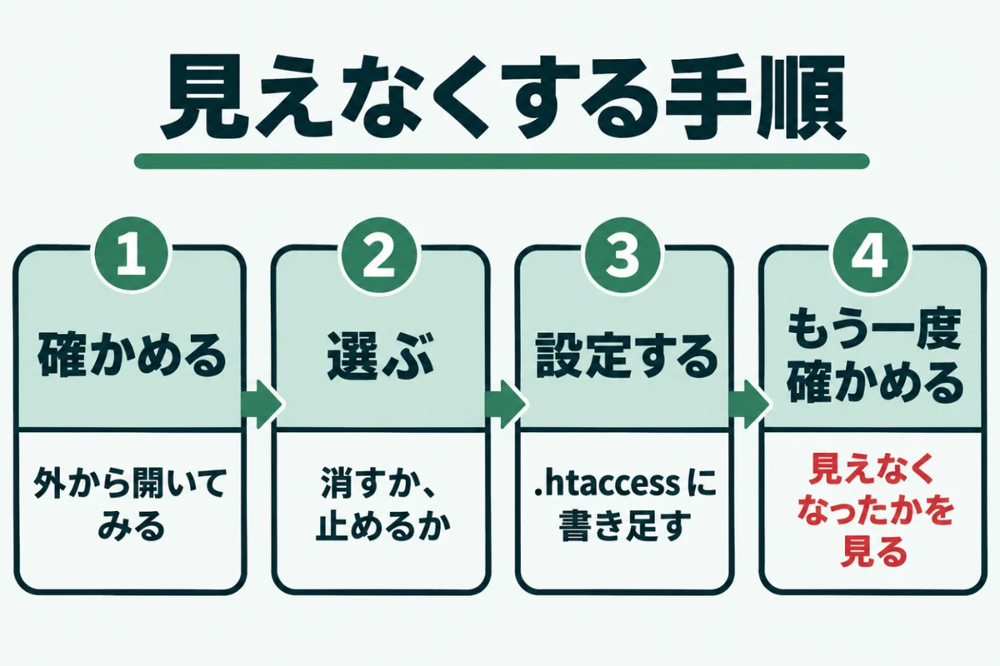
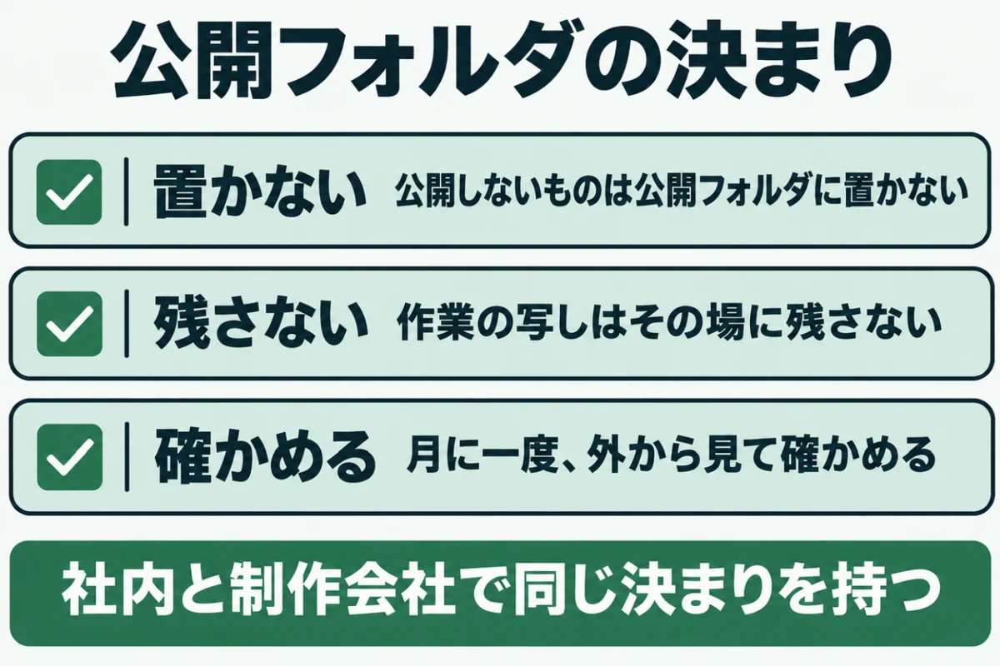

WordPressのreadme.htmlは消すべき？公開しなくていいファイルの考え方先に確かめたい危ないファイルと止め方

「readme.htmlは消したほうがいい、と言われたが本当なのか」と迷っていませんか？
readme.htmlは、WordPressに最初から入っている案内のファイルです。版の番号が外から分かるので危ない、という説明をよく見かけます。
実は、今のreadme.htmlに版の番号は書かれていません。この記事では、readme.htmlを消すべきかの判断と、本当に危ないファイルを整理しました。
WordPressの開発の記録と、IPAやOWASPの資料をもとにしています。公開しなくていいファイルの考え方を、この機会に押さえておきましょう。
WordPressのreadme.htmlとは？入っている場所と中身

WordPressのreadme.htmlは、サイトの動作には使われない案内のファイルです。本体を入れると、一番上のフォルダに自動で置かれます。
置かれる場所が公開フォルダなので、URLを直接入れれば誰でも開けるのです。自社のドメインのあとに「/readme.html」を付けて、一度開いてみてください。案内文が表示されたら、外から見えている状態です。
本体に最初から入っている案内のファイル
WordPress 7.1.5の一番上のフォルダには、16個のファイルが入っています。そのうち、プログラムではないものはreadme.htmlとlicense.txtの2つだけです。readme.htmlには、インストールや更新の手順、必要な環境、参考のリンクが書かれています。サイトを表示するときには読み込まれません。消しても、表示や管理画面が止まることはないでしょう。検索に載らないようにする指定も入っているため、検索結果から見つかることは少ないはずです。
今のreadme.htmlに版の番号は書かれていない
古いreadme.htmlには、版の番号が書かれていました。たとえば4.6.1では、「Version 4.6.1」という表示です。攻撃する側が古い版を探す手がかりになる、というのが消す理由でした。この書き方は、開発の記録によると4.7で大きな番号だけに変わっています。そして4.8からは、版の番号そのものが消されました。2017年には、3.7から4.7までの古い系統からも削除されています。ただし、必要なPHPの版などは今も書かれたままです。
- 参考：#35554 (De-emphasise WordPress Version in the admin)｜WordPress Trac
- 参考：#42386 (Remove version number from readme.html in branches)｜WordPress Trac
日本語版でも中身は英語になった
以前の日本語版には、日本語に訳したreadme.htmlが入っていました。公式の案内によると、訳が入っていたのは2022年10月18日までのパッケージです。7.1.5の日本語版と英語版を比べても、readme.htmlは同じ中身になっています。自社のreadme.htmlが日本語で表示されたら、注意してください。本体を長く更新していないおそれがあります。更新が止まっているサイトは、readme.htmlよりも本体の古さのほうが大きな問題です。
WordPressのreadme.htmlは消すべき？3つの判断材料

WordPressのreadme.htmlは、消しても消さなくても安全性は大きく変わりません。急いで消す必要はないものの、見えなくしておいて損もないファイルです。
こう言える理由を、3つの判断材料に分けて紹介します。大事なのは、readme.htmlを消したことで安心しないことです。消す作業より先にやるべきことがあります。
① 消しても版は隠しきれない
WordPressの版は、readme.html以外の場所からも分かります。ページの中に出る「generator」という目印や、RSSの中に版の番号が出る作りだからです。読み込むファイルのURLの末尾に、版の番号が付くこともあります。開発チームの担当者は、公開されたソフトの版を見分けられなくする方法はないと述べました。そのうえで、版の番号を隠すのではなく、更新するよう勧めています。版の確かめ方は、別の記事で紹介しました。WordPressのバージョンを確認する方法（管理画面と外からの両方）を見てください。
- 参考：get_the_generator｜WordPress Developer Resources
- 参考：#23394 (Remove version from readme.html / Upgrade core doesn't restore the file)｜WordPress Trac
② 消しても更新のたびに戻る
readme.htmlは、本体を更新すると新しいものが置き直されます。更新の処理が、新しい版のファイルを丸ごと写す作りになっているからです。日本語のサイトに配られる更新用のファイルにも、readme.htmlは入っています。消す方法を選ぶと、更新のたびに消し直すことになるでしょう。自動更新を有効にしているサイトでは、気づかないうちに戻っています。4.7からは、消したり書き換えを禁じたりしたサイトでも更新が失敗しないよう直されました。
③ 初期のままの目印にはなる
それでも、readme.htmlが見えるサイトは、入れたときのままという印象を与えるでしょう。OWASPの検査の手引きも、最初から付いてくる不要なものは公開の前に取り除くよう勧めています。スキゼロの無料簡易診断も、readme.htmlが外から見えるかを確かめる作りです。見えていた場合、この項目はA〜Eの5段階で上から2番目のB判定になります。大きな減点にはしていません。手間をかけずに見えなくできるなら、済ませておくとよいでしょう。
WordPressでreadme.htmlより先に確かめたい危ないファイル

WordPressでreadme.htmlより先に確かめたいのは、中身が漏れると困るファイルです。readme.htmlなら、見られても案内文が読まれるだけで済むでしょう。
一方で、パスワードやお客さまの情報が入ったファイルは、見られた時点で被害になります。IPAも、公開すべきでないファイルを公開していないかを点検の最初の項目に挙げました。代表的なものを3つ紹介します。
設定ファイルの写しとバックアップ
一番危ないのは、作業のときに作った写しです。設定ファイルを直す前に、控えを残すことがあるでしょう。「wp-config.php.bak」のような名前のファイルです。名前の末尾が変わると、中身がそのまま表示されることがあります。データベースのパスワードまで読まれてしまうのです。データベースを書き出したファイルにも、同じ危険があります。JPCERT/CCは、書き出しファイルが外から読めた事例を報告しました。
- 参考：Review Old Backup and Unreferenced Files for Sensitive Information｜OWASP Web Security Testing Guide
- 参考：インターネット上に公開されてしまったデータベースのダンプファイル(2017-08-08)｜JPCERT/CC Eyes
デバッグの記録
不具合を調べるための記録のファイルも、置きっぱなしにされがちです。WordPressで記録を有効にすると、「debug.log」というファイルが作られます。置かれるのは、「wp-content」というフォルダの中です。公開フォルダの中なので、外から読めることがあります。公開中のサイトで使うことは、WordPressの公式も勧めていません。制作会社が調査のあとに止め忘れることもあるでしょう。調べ終わったら、機能を止めてファイルも消してください。
ファイルの一覧が見える状態
フォルダのURLを開いたときに、中のファイルの一覧が表示されるサイトがあります。サーバーの設定で、一覧の表示が有効になっている状態です。IPAの診断の仕様は、一覧が見えるだけなら危険度を低としています。ただし、重要な情報が含まれていれば危険度は高という扱いです。一覧が見えると、控えや記録のファイルを探す手間が省けてしまいます。スキゼロの診断でも、画像のフォルダの一覧が見える場合はD判定にしました。
WordPressのreadme.htmlなど不要なファイルを見えなくする手順

WordPressのreadme.htmlを見えなくする方法は2つあります。ファイルを消すか、アクセスを止めるかです。どちらも、作業の前後に外から開いて確かめます。
サーバーの設定を触る作業なので、不安があれば制作会社に頼んでください。自分で進める場合は、変更の前に今の設定を控えておくのが基本です。エックスサーバーを例に、流れを紹介します。
外から見えるかを確かめる
まず、ブラウザで自社のドメインに「/readme.html」を付けて開きます。案内文が出たら、見えている状態です。「ページが見つかりません」や「アクセスできません」と出れば、すでに対策されています。同じ要領で「/license.txt」も確かめましょう。こちらは著作権と利用の条件が書かれた文書で、版の番号は入っていません。あわせて、過去に作った控えのファイルが残っていないかも、サーバーの中で探してください。
消すか、アクセスを止めるかを選ぶ
消す場合は、サーバーのファイル管理の画面などからreadme.htmlを削除します。ただ、本体の更新のたびに戻る点が手間でしょう。アクセスを止める場合は、「.htaccess」という設定ファイルに3行を足します。一度書けば、更新でファイルが戻っても見えません。書き方の見本は、WordPressの公式の資料にあります。見本のファイル名を「readme.html」に置き換えて使ってください。書き損じるとサイト全体がエラーになるため、不安なら制作会社に頼みましょう。
エックスサーバーで設定を足す
エックスサーバーでは、サーバーパネルの「.htaccess編集」から書き足せます。今の内容を先にメモ帳などへ写し、元に戻せるようにしておきましょう。エックスサーバーのマニュアルは、心当たりがない記述でも不用意に消さないよう注意しています。書き足す場所は、ファイルの一番上が安全です。WordPressが自動で書き換える範囲の中に書くと、あとで消えることがあります。保存したら、サイトが普段どおり表示されるかをすぐに確かめてください。「/readme.html」を開き直し、見えなくなったことも確かめます。
WordPressのreadme.htmlを機に見直したい公開フォルダの決まり

WordPressのreadme.htmlの話は、公開フォルダに何を置くかを見直すよい機会です。1つのファイルを消すより、置き方の決まりを作るほうが長く効きます。
決まりは難しいものではありません。社内と制作会社で同じ内容を共有しておけば、担当者が替わっても守れます。IPAの資料をもとに、3つにまとめました。紙1枚に書いて残しておくと安心です。
公開しないものは公開フォルダに置かない
IPAは、公開を想定していないファイルを公開用のフォルダに置かないよう呼びかけています。ページからリンクしていなくても、URLを直接入れれば読めてしまうからです。リンクがないから見つからない、は通用しません。見積書や名簿のようなファイルを、受け渡しのために一時的に置くのも避けましょう。置く必要があるときは、パスワードをかけ、用が済んだらすぐに消します。検索エンジンに記録が残ることがある点にも注意してください。
作業の写しをその場に残さない
ファイルを直す前に、同じフォルダに写しを作る人は多いでしょう。その写しが、消し忘れのまま何年も残ります。JPCERT/CCが調べた事例でも、サーバーの移行のときの消し忘れが原因に挙がりました。控えのつもりで置いたままにした、という理由も報告されています。写しは自分のパソコンに取り、サーバーの上には残さないのが安全です。制作会社に作業を頼むときも、終わったあとに不要なファイルを消したかを確かめてください。
外から定期的に確かめる
決まりを作っても、時間がたつと不要なファイルは増えていきます。月に一度、外から見える状態になっていないかを確かめましょう。本体の更新のあとは、readme.htmlが戻っていないかも見てください。スキゼロの無料簡易診断は、readme.htmlとファイルの一覧を外から確かめます。控えのファイルのように名前が決まっていないものは、自動では見つけきれません。サーバーの中を人の目で見る点検と、組み合わせてください。
URLを入れるだけで、不要なファイルの見え方やWordPress本体の版など8項目を無料で判定します。登録はいりません。
無料で診断するWordPressのreadme.htmlに関するよくある質問
license.txtも消したほうがいいですか？
license.txtも、サイトの動作には使われない文書です。扱いはreadme.htmlと同じで、消してもアクセスを止めても問題ありません。中身は著作権と利用の条件で、版の番号は書かれていないファイルです。本体を更新すると戻る点も同じなので、アクセスを止める方法が向いています。readme.htmlと一緒に設定しておくとよいでしょう。
readme.htmlを消すと、サイトや更新に影響しますか？
表示や管理画面には影響しません。readme.htmlは、サイトを動かすプログラムから読み込まれないファイルだからです。本体の更新についても、4.7からは消していても失敗しないよう直されました。ただし、更新のたびに新しいreadme.htmlが置き直されます。消したつもりでも戻っていることがあるので、更新のあとに確かめてください。
wp-config-sample.phpは残っていても大丈夫ですか？
残っていても、大きな問題にはなりません。wp-config-sample.phpは、設定ファイルの雛形だからです。データベースの名前やパスワードの欄には、仮の文字が入っているだけになっています。自社の本物の設定が書かれているのは、wp-config.phpのほうです。守るべきなのは本物のほうなので、読める人を絞る設定を確かめましょう。WordPressの公式は、所有者とサーバーだけが読める権限を勧めています。
版の番号を隠すプラグインは入れたほうがいいですか？
優先度は高くありません。版の番号は複数の場所から分かるため、隠しきるのは難しいからです。WordPressの公式も、隠すことを主な守りにするのは当てにならないとしています。プラグインを増やすと、そのプラグイン自体の更新という手間も増えるでしょう。まず本体とプラグインを新しく保ち、余力があれば隠す対策を足してください。
自社のサイトで何が見えているかを、まとめて確かめる方法はありますか？
readme.htmlとファイルの一覧は、スキゼロの無料簡易診断で確かめられます。URLを入れるだけで、ほかの7項目とあわせて判定する仕組みです。控えのファイルや記録のファイルは、名前がサイトごとに違うため外からは探しきれません。サーバーのファイル管理の画面で、見覚えのないファイルがないかを見てください。判断に迷うファイルは、消す前に制作会社へ確かめましょう。
まとめ
WordPressのreadme.htmlに、今は版の番号が書かれていません。急いで消す必要はないでしょう。消しても更新で戻るため、見えなくするならアクセスを止める方法が向いています。
先に確かめたいのは、設定ファイルの写しや記録のファイルなど、中身が漏れると困るものです。公開フォルダに余計なものを置かない決まりを作り、月に一度は外から確かめましょう。
まずは、今の状態を知るところから。
URLを入れるだけで、数十秒で判定が出ます。登録はいりません。